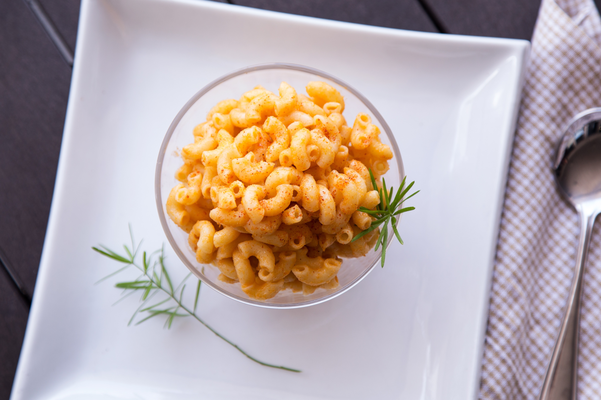

Macaroni

Description
This low fat, low calorie macaroni recipe will have you wondering where it has been all your life. Like a long lost lover you'll always make your way
back to this creamy, cheesy delight, without the repercussions of indulging.
Ingredients
- Low fat milk (250ml)
- Hot sauce (60ml)
- Light cream cheese (120g)
- Low fat cheddar
- Macaroni noodles
Recipe
- Add the milk, hot sauce, cream cheese, and cheddar into a pan at low heat
- Stir until smooth and creamy
- Add 500g of your favorite macaroni noodle
- Mix until the macaroni is fully covered
- Serve with a dash of salt and pepper, and enjoy!
Home